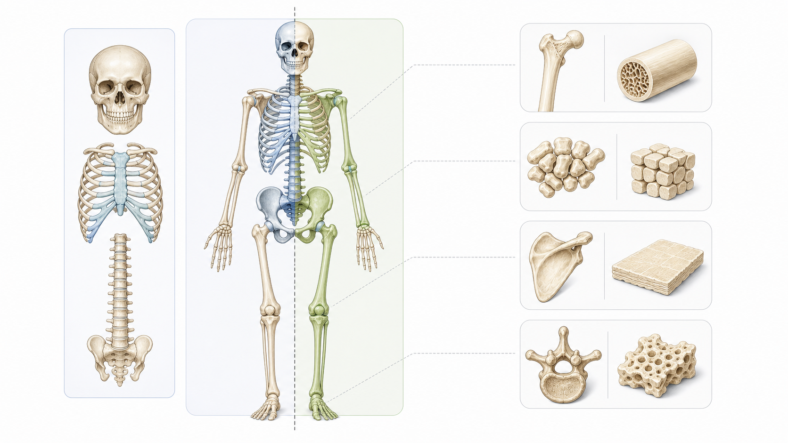

Day 15 · 生物力学基本概念与力

生物力学把动作翻译成物理语言：力改变运动状态，质量越大越难加速，方向决定有效分量，摩擦让脚和手不打滑，重心位置决定稳定性。
先抓一条线：训练动作不是只有“用力大小”，还要问力往哪走、合力是否超过阻力、斜向力如何分解、支撑面和重心是否让身体能稳住。
打开 Day15 原学习页 →目标：把早上生物力学新知识压缩成可回忆框架，同时回拉 Day14、Day12、Day08、Day01。今天不推进进度，只复习。
生物力学把动作翻译成物理语言：力改变运动状态，质量越大越难加速，方向决定有效分量，摩擦让脚和手不打滑，重心位置决定稳定性。
先抓一条线：训练动作不是只有“用力大小”，还要问力往哪走、合力是否超过阻力、斜向力如何分解、支撑面和重心是否让身体能稳住。
打开 Day15 原学习页 →



今日新知识 Day 15：牛顿第二定律 F=ma 放到硬拉离地瞬间怎么解释？
今日新知识 Day 15：为什么“力大”不一定等于“目标肌刺激好”？
Day 14：用一句话区分肌梭和 GTO，并说出对应训练意义。
Day 14：深蹲下降、底部停顿、起立分别对应哪类收缩？
Day 12：McGill 核心功能四类是什么？平板支撑和 Pallof press 分别偏哪类？
Day 12：为什么“核心强=卷腹多”这个说法不完整？
Day 8：快速预拉伸为什么可能提升起跳表现？
Day 8：客户单腿落地总不稳，你从哪些感觉系统考虑？
Day 1：骨骼四大功能是什么？哪一个和力量训练渐进负荷关系最大？
Day 1：中轴骨和附肢骨怎么分？为什么动作分析要先有这张骨架地图？
| 易错点 | 错因 | 修正句 |
|---|---|---|
| 把力当成主观用力感 | 没把力和加速度、方向联系起来。 | 力是改变运动状态的矢量，既看大小也看方向。 |
| 只看器械重量 | 忽略力臂、关节角度和绳索方向。 | 目标肌承受的是和动作结构有关的有效分量，不是重量片数字本身。 |
| 摩擦只理解为阻碍 | 没看到摩擦提供抓握和地面反作用力传递条件。 | 脚底和手掌需要足够摩擦，动作才不会打滑，力才能传出去。 |
| 核心只练卷腹 | 把核心理解成腹直肌屈曲。 | 核心训练常要抗伸展、抗旋转、抗侧屈、抗屈曲，维持中立传力。 |
| 骨只当静态支架 | 忘记骨会承载、传力和重塑。 | 骨是活组织，负荷方向和进阶速度都会影响适应。 |